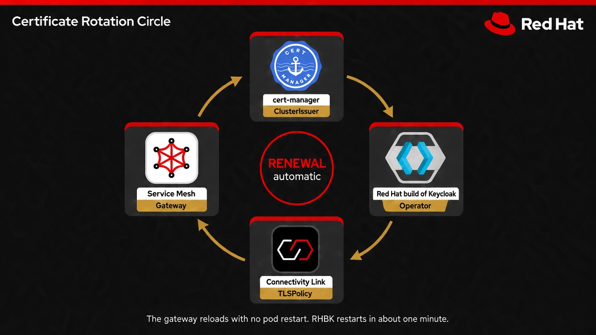

cert-manager + Connectivity Link + Service Mesh — zero-touch TLS lifecycle for Red Hat Build of Keycloak and every application on your cluster.
Managing TLS certificates manually for identity providers and APIs is operationally fragile —
expired certificates cause outages, and rotating them by hand across multiple services is error-prone.
rhbk-cert eliminates that toil: a single Validated Pattern GitOps deployment
provisions cert-manager, configures a ClusterIssuer (ACME or internal CA),
and wires automatic certificate renewal into both the Service Mesh Gateway (via Connectivity Link TLSPolicy)
and the RHBK Operator (via spec.http.tlsSecret).
Certificates renew before expiry. No human intervention. Replicable for any number of applications.
Neuralbank is the example RHBK client. Chart neuralbank deploys its
frontend, API, and database in neuralbank-stack. The Gateway sends / to the
frontend and /api to the API. A Connectivity Link AuthPolicy checks the JWT from the
RHBK realm neuralbank on the API. Any other client can use the same Gateway.
Issues and renews TLS certificates from ACME (Let's Encrypt) or an internal CA. Supports Route53, Cloudflare, Azure DNS, Google Cloud DNS, and ACME DNS.
RHBK Operator monitors the referenced TLS Secret. When cert-manager renews it, RHBK automatically restarts to load the new certificate — no manual action.
Attached to the Service Mesh Gateway, TLSPolicy delegates certificate lifecycle to cert-manager. The Gateway reloads renewed certificates with no pod restart.
All resources — ClusterIssuer, TLSPolicy, Gateway, Keycloak CR — are declared in Git and continuously reconciled by ArgoCD. Drift is prevented.
DNS provider credentials and Keycloak admin secrets are stored in HashiCorp Vault. External Secrets Operator injects them as Kubernetes Secrets — never committed to Git.
Add a new application by attaching an HTTPRoute to the existing Gateway. The ClusterIssuer and TLSPolicy already cover it. Zero additional cert configuration.
The rotation circle runs entirely within the cluster. Once bootstrapped, certificate renewal requires no external operator action.

All operators are sourced from the official Red Hat Operator Catalog (redhat-operators). No community or third-party catalogs required.
| Operator | Channel | Purpose |
|---|---|---|
| Red Hat OpenShift GitOps | stable | ArgoCD — GitOps engine for all resources |
| cert-manager for OpenShift | stable-v1 | Certificate issuance and automatic renewal |
| External Secrets Operator | stable-v1 | Pull secrets from Vault into Kubernetes |
| Red Hat OpenShift Service Mesh 3 | stable-3.2 | Gateway API for the mesh. Validated with operator 3.2.11 on channel stable-3.2. |
| Red Hat Connectivity Link | stable | TLSPolicy, AuthPolicy, and RateLimitPolicy. Validated with operator 1.4.3 on channel stable. |
| Red Hat Build of Keycloak | stable-v26.4 | OIDC Identity Provider with TLS secret integration |
Set acme.provider in values-secret.yaml to select your DNS provider for ACME DNS01 challenge. For internal/air-gapped clusters, use selfSigned.enabled: true.
| Provider | acme.provider | Secret key |
|---|---|---|
| AWS Route 53 | route53 | secret-access-key |
| Cloudflare | cloudflare | api-token |
| Azure DNS | azure | client-secret |
| Google Cloud DNS | google | key.json |
| ACME DNS (self-hosted) | acmedns | acmedns.json |
| Resource | Minimum | Recommended |
|---|---|---|
| OCP version | 4.19 | 4.20 |
| Control plane nodes | 3 × 4 vCPU / 16 GB RAM | 3 × 8 vCPU / 32 GB RAM |
| Worker nodes | 3 × 8 vCPU / 32 GB RAM | 3 × 16 vCPU / 64 GB RAM |
| Storage class | RWO, 50 GB/worker | RWO, 100 GB/worker |
| DNS | Wildcard *.apps.<domain> → LB | Same |
| OCP Catalog | redhat-operators accessible | Same |
OpenShift 4.19 is the minimum because that is the first release where Red Hat Connectivity Link and OpenShift Service Mesh 3 are supported. 4.20 is the recommended release.
# Clone and configure
git clone https://github.com/maximilianoPizarro/rhbk-cert.git
cd rhbk-cert
cp values-secret.yaml.template values-secret.yaml
# Edit values-secret.yaml: fill in Keycloak admin, DB, and DNS credentials
# Deploy
make install
make install installs the Validated Patterns Operator (if not present), loads secrets into Vault,
and applies the Pattern CR. Run scripts/preflight.sh before make install. Argo CD then syncs GitOps, Vault and External Secrets, the Service Mesh, cert-manager, RHBK, and the gateway, in that application order.
Monitor progress: oc get applications -n vp-gitops
After Argo CD reports the applications Synced, confirm the certificates and the edge before calling the install done.
oc get certificate -A
oc describe certificate rhbk-tls -n keycloak-system
oc get clusterissuer
oc get tlspolicy -A
openssl s_client -connect rhbk.apps.<cluster-domain>:443 -servername rhbk.apps.<cluster-domain> </dev/null 2>/dev/null | openssl x509 -noout -datesReady: True on the Certificate and a notAfter date about 90 days out means issuance worked. Programmed: True on the Gateway means the Service Mesh listener is serving.
oc describe challenge -A. Confirm the DNS secret exists in cert-manager and that the zone is the one delegated for the cluster apps domain.acme.staging to true, let a staging certificate become Ready, then set it back to false. Staging certificates are not publicly trusted.SecretSynced even when the token is rejected by the provider; the challenge is the place to look.hostedZoneID mismatch, or a zone that is not authoritative for *.apps, sits in Pending until the deadline.oc describe certificate names the issuer, the order, and the failing condition. A missing ClusterIssuer name means global.certificateIssuer does not match a Ready issuer.oc get gateway -n neuralbank-stack is not Programmed, fix the Service Mesh gateway class before debugging the policy.cmctl renew rhbk-tls -n keycloak-system asks cert-manager to reissue. Without cmctl, delete the Secret. The Certificate object recreates it:
oc delete secret rhbk-tls-secret -n keycloak-systemThe same pattern works for neuralbank-gateway-tls in neuralbank-stack. Do not delete the Certificate object. Deleting only the Secret is enough.
The charts set a 90 day lifetime and renew 15 days before expiry. Let's Encrypt will not issue a certificate longer than 90 days, so 2160h matches the public CA. Use 720h when you want the renewal to start 30 days before expiry.
| Setting | Chart default | Meaning |
|---|---|---|
rhbkCertificate.duration | 2160h | 90 days, RHBK certificate |
rhbkCertificate.renewBefore | 360h | 15 days before expiry |
tlsPolicy.duration | 2160h | 90 days, gateway certificate |
tlsPolicy.renewBefore | 360h | 15 days before expiry |
renewBefore must be shorter than duration. Change them per cluster with an application override in values-hub.yaml for rhbkCertificate.renewBefore, rhbkCertificate.duration, tlsPolicy.renewBefore, and tlsPolicy.duration.
Let's Encrypt certificates are already trusted by browsers and by the OpenShift ingress. A self-signed CA is not. Set acme.enabled to false and selfSigned.enabled to true together. The chart creates Secret rhbk-cert-ca in cert-manager and a ClusterIssuer that is also named letsencrypt-prod. Leaving ACME enabled at the same time produces two issuers with that name.
oc get secret rhbk-cert-ca -n cert-manager -o jsonpath='{.data.ca\.crt}' | base64 -d > ca.crtDistribute ca.crt to every client that calls RHBK or the gateway. Browsers need it in the trust store of the workstation. OpenShift workloads that call RHBK over HTTPS need it mounted and set as SSL_CERT_FILE, or added to the image trust store.
The Keycloak custom resource in this pattern does not configure a truststore. To make RHBK trust the same CA for outbound TLS, add a truststore that points at a Secret containing the CA. The chart does not do this automatically:
spec:
truststores:
rhbk-cert-ca:
secret:
name: rhbk-cert-caThe certificates rotate. The DNS token does not. Route 53 access keys and Cloudflare API tokens expire or get revoked, and a dead token shows up as a Pending challenge, not as a failed ExternalSecret.
The Route 53 solver in this chart reads only secret-access-key from Secret dns-credentials. It does not set accessKeyID. Put the key id in the secret as well if your cert-manager build requires both; the template as shipped wires the secret key named in acme.route53.credentialsSecretKey.
Minimum Route 53 actions, matching charts/all/cert-manager-config/values.yaml:
{
"Version": "2012-10-17",
"Statement": [{
"Effect": "Allow",
"Action": [
"route53:GetChange",
"route53:ChangeResourceRecordSets",
"route53:ListHostedZonesByName"
],
"Resource": "*"
}]
}Set acme.route53.hostedZoneID when the account can see more than one zone. A Cloudflare token needs Zone DNS Edit on the zone that hosts the cluster apps domain.
Rotate the credential in Vault, at the path the ExternalSecret already reads. The ExternalSecret refreshes every hour:
vault kv put secret/hub/dns-credentials secret-access-key=<new-key>Force the refresh with oc annotate externalsecret dns-credentials -n cert-manager force-sync=$(date +%s) --overwrite if you cannot wait for the hour.
cert-manager exposes certmanager_certificate_expiration_timestamp_seconds and certmanager_certificate_ready_status on the controller metrics endpoint. OpenShift user-workload monitoring scrapes that endpoint once it is enabled under openshift-user-workload-monitoring.
A PrometheusRule is rendered only when monitoring.enabled is true on cert-manager-config. The default is false because this pattern does not install the monitoring CRDs. The rule fires when a certificate expires in less than 14 days, or when certmanager_certificate_ready_status stays 0 for 15 minutes. Alertmanager routing is the cluster's existing route: a severity: warning label is what the example sets, and the OpenShift Alertmanager config decides the receiver.
The Service Mesh Gateway terminates TLS at the listener. OpenShift 4.17 and later default the ingress and the mesh to TLS 1.2 as the minimum. Do not attach a listener that allows TLS 1.0 or 1.1. The Gateway manifest in this pattern sets mode: Terminate and does not lower that floor.
Only the cert-manager controller should approve CertificateRequests. The ClusterIssuer is cluster-scoped, so a namespace admin cannot create a second public issuer unless they can also create ClusterIssuers. Keep ClusterIssuer creation with the pattern, and do not grant cert-manager.io approve verbs to application teams.
The charts do not install NetworkPolicies. A policy that blocks cert-manager from DNS, or blocks the Gateway from the application Service, stops issuance or traffic. Add policies in the cluster baseline after the rotation circle is Ready, and allow cert-manager egress to the DNS provider API and to Let's Encrypt.
values-secret.yaml is already listed in .gitignore. Commit values-secret.yaml.template only. A secret that lands in Git history has to be rotated in Vault and in the cloud IAM user, not just deleted in a later commit.
Validated on 20 November 2026 against an OpenShift 4.22 sandbox. The channels below are subscriptions, not pinned CSVs. A later CSV on the same channel was not part of that run.
| Component | Tested | Channel |
|---|---|---|
| OpenShift | 4.22.22 | cluster |
| OpenShift GitOps | 1.22.3 | gitops-1.22 |
| cert-manager Operator for Red Hat OpenShift | 1.20.1 | stable-v1 |
| External Secrets Operator | 1.2.1 | stable-v1 |
| Red Hat OpenShift Service Mesh | 3.2.11 | stable-3.2 |
| Red Hat Connectivity Link | 1.4.3 | stable |
| Red Hat build of Keycloak | 26.4.18 | stable-v26.4 |
The automatic RHBK restart after the TLS Secret changes was observed with rhbk-operator.v26.4.18-opr.1 on that cluster, with keycloak.instances: 1. Treat the "about one minute" figure as that observation, not as a guarantee for every later operator build.
make uninstall runs the Validated Patterns uninstall role. It is marked experimental upstream. It removes the Pattern resources it created. It does not delete a certificate from Let's Encrypt, and it does not empty Vault.
Upgrade by merging to main. The hub Application tracks that branch and reconciles. Confirm oc get applications -n vp-gitops returns to Synced before treating the rollout as finished.
Roll back by setting the Pattern targetRevision to the previous commit and committing that change, or by reverting the Git commit and pushing. Argo CD then renders the older chart. Certificate Secrets are not backed up by this pattern. cert-manager reissues them from the Certificate object as long as the issuer and the DNS credentials still work. A deleted Secret comes back. A deleted Certificate does not, until Git restores the object.
The default is one RHBK instance. The operator rolls the pod when rhbk-tls-secret changes, and with one replica that is an outage of about a minute on the build that was tested. Set keycloak.instances to at least 2. The chart then creates a PodDisruptionBudget named rhbk with minAvailable: 1, selecting app.kubernetes.io/instance: rhbk. Postgres in this pattern is still a single replica. The database is not highly available.
Let's Encrypt and public DNS APIs are not reachable. Use selfSigned.enabled: true and distribute the CA, as described in the trust section. The catalog image pull still needs a mirrored operator index.
The Gateway hostname is *.<cluster domain>, so one certificate covers the applications on that Gateway. RHBK uses its own host certificate, rhbk.<cluster domain>. A host that is not on that wildcard needs its own Certificate or its own TLSPolicy.
The pattern ships a single hub cluster group. Another cluster needs its own Pattern CR, its own issuer, and its own copy of the DNS credentials. Nothing in this repository fans one certificate out to many clusters.
Neuralbank is the example RHBK client deployed by chart charts/all/neuralbank. The frontend is served at https://neuralbank.<cluster domain>/. Connectivity Link validates the RHBK JWT only on /api. The test user is in Secret neuralbank-user in neuralbank-stack. Another client can still attach its own HTTPRoute to neuralbank-gateway.
The sample below uses neuralbank-stack, the namespace of the example RHBK client.
The existing ClusterIssuer and TLSPolicy on the Gateway
cover all HTTPRoutes attached to it — no additional certificate configuration required.
apiVersion: gateway.networking.k8s.io/v1
kind: HTTPRoute
metadata:
name: my-new-app
namespace: neuralbank-stack
spec:
parentRefs:
- name: neuralbank-gateway
namespace: neuralbank-stack
hostnames:
- my-new-app.apps.cluster.example.com
rules:
- backendRefs:
- name: my-new-app
port: 8080
To add OIDC protection, attach an AuthPolicy (kuadrant.io/v1, the API group shipped by Connectivity Link) that references the existing RHBK realm. No certificate changes are required.